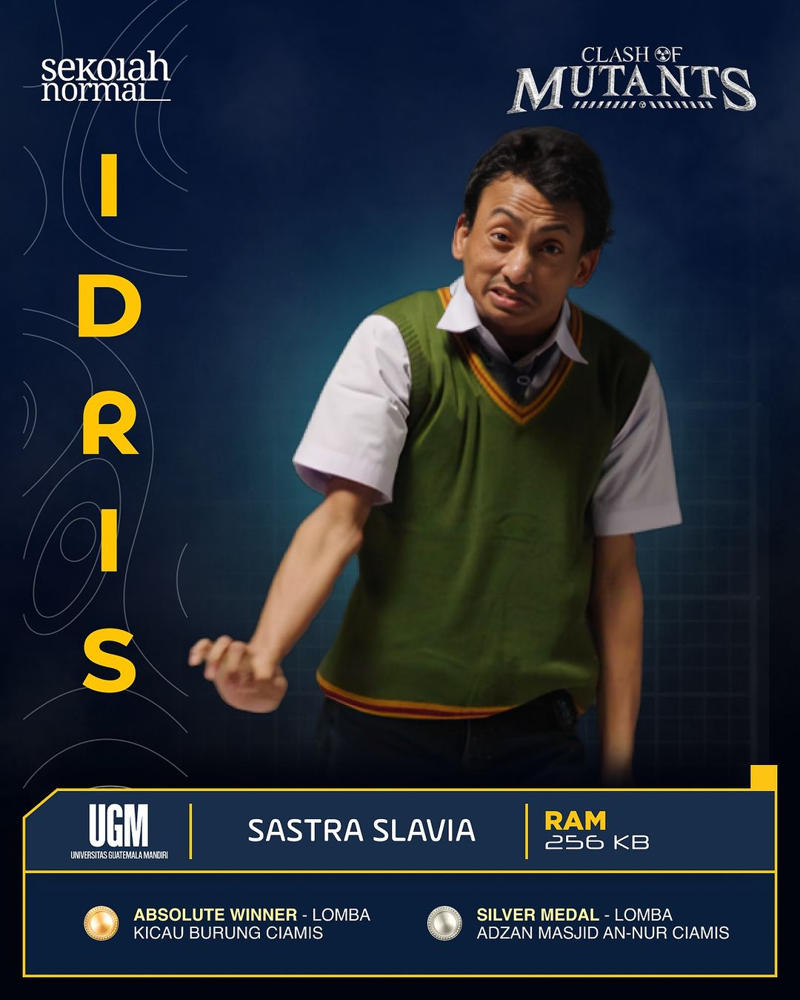
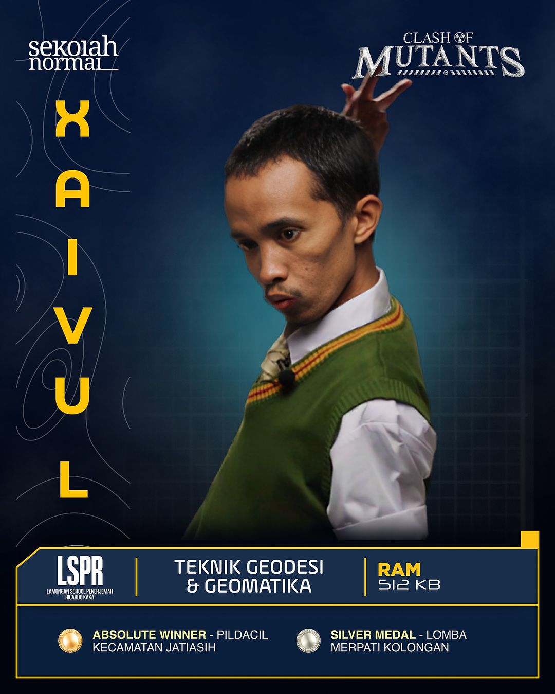
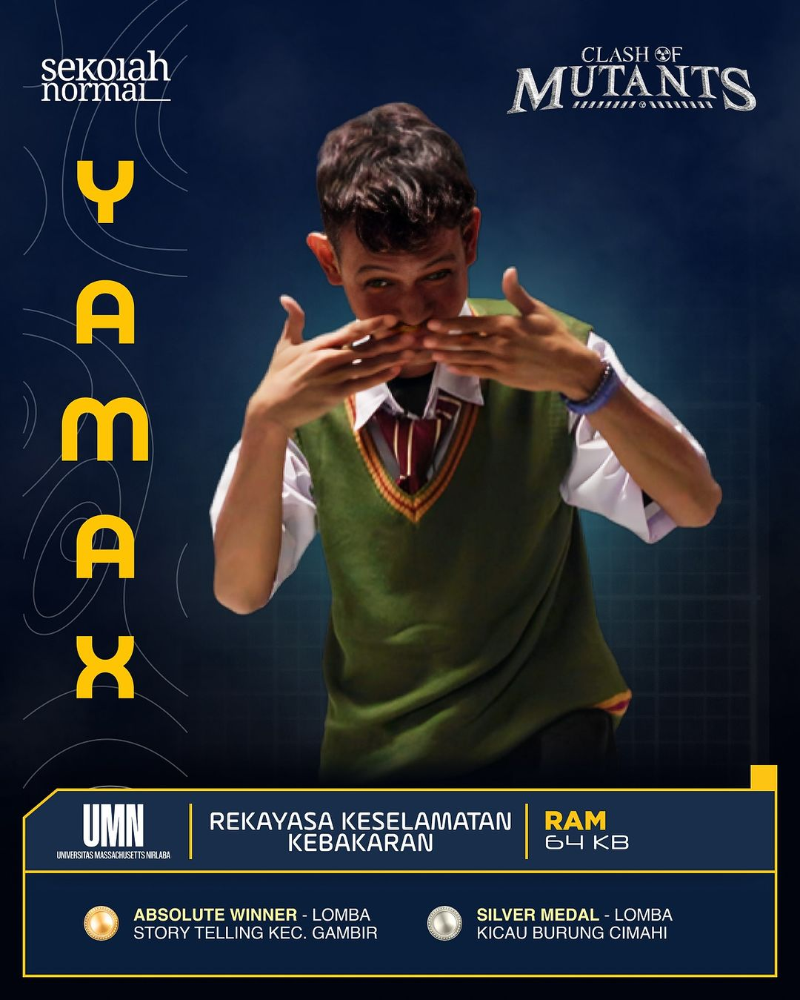
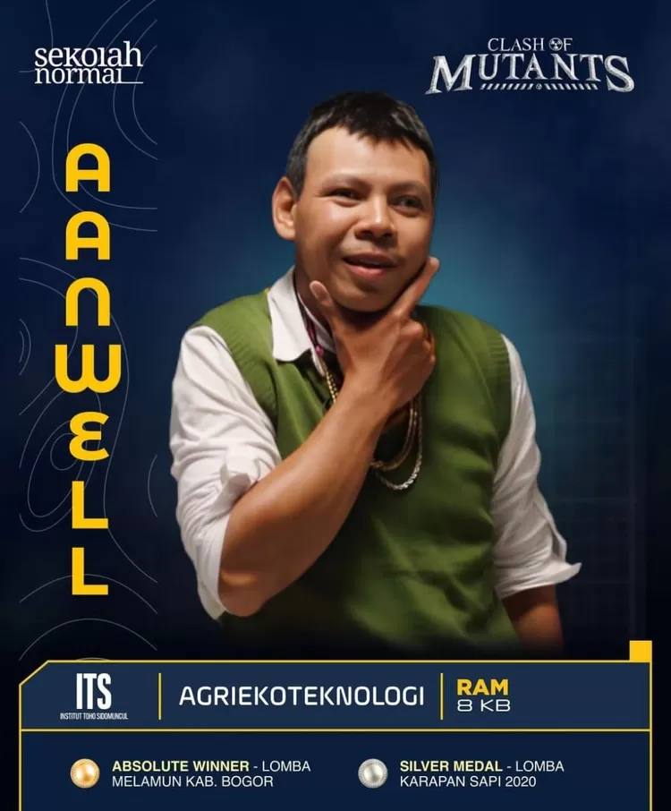

Kelompok IDUSRT

1. Deni Catur Cahyadi
202243502702

2. Rendi Hari Saputra
202243502657

3. Farhan Febriansyah
202243502690

4. Muhammad Rizky
202243502649
5. Raka Dhafaiz Choir
202243502645
6. Fathur Rohman Solih
202243502665